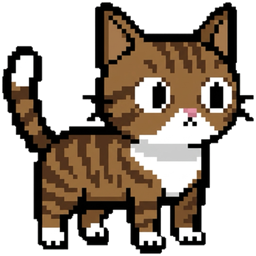

会回应的桌面宠物
像素风动画随工作活动变化，安静陪伴不打扰。
一只会回应你工作世界的桌面宠物。
仅本地计算的 Agent 桌面伴侣：把 Agent 活动转化为可爱桌宠的一举一动。
macOS · Windows · Linux 支持开发中，最新版本见 GitHub Releases。

像素风动画随工作活动变化，安静陪伴不打扰。
支持连接 Claude Code、Codex CLI、Qoder 与 Antigravity，桌宠实时反映 Agent 活动。
数据只在本机处理，无遥测，运行日志最小化。
订阅远程服务器状态，让本地桌宠同步呈现远端 Agent 活动。
UI 隐藏时暂停轮询；空闲平均 CPU 0.013%，内存约 37 MiB。
用 .fpack 格式导入和打包更多桌宠形象。
| 集成 | 传输方式 | 状态 |
|---|---|---|
| Claude Code | Hooks | 可用 |
| Codex CLI | Hooks | 可用 |
| DeepSeek Harness | Hooks | 可用 |
| Qoder | Hooks | 可用 |
| Google Antigravity | Hooks | 可用 |
Apple Silicon macOS 上连续运行约 2 小时 39 分钟后的 30 秒空闲采样：
为了展示当前状态，Familiar 可能读取最近的任务说明、命令文本、工具名称、文件路径等本地 Hook 数据。仅用于本地计算，不会持久化 Agent 事件历史，也不会把采集到的数据发送到远程服务。
完整的数据流、配置修改、日志和清理说明见项目文档。
查看隐私文档